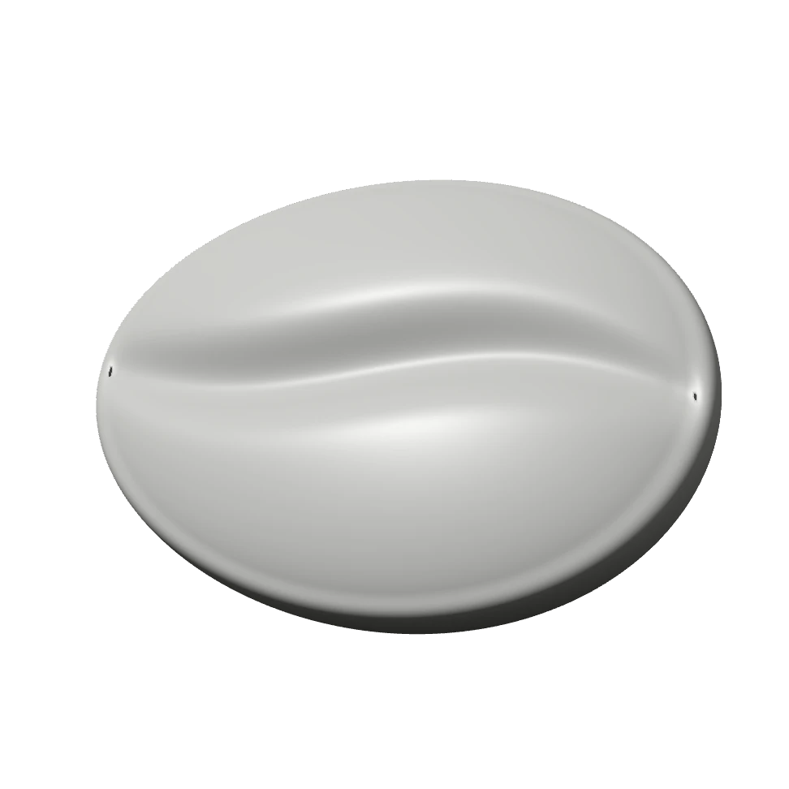

Bild folgt
01 · Kaffee-Werkzeuge
Für uns ist Kaffee angewandte Physik.



Etappe 4
Hier geht die Startseite mit Etappe 4 weiter.
Es folgen die Werkzeuge, das Narrativ, der Schriftzug, die sieben Prinzipien, die Fragen und die Fusszeile. Diese Studie zeigt Musterdaten und verkauft nichts.